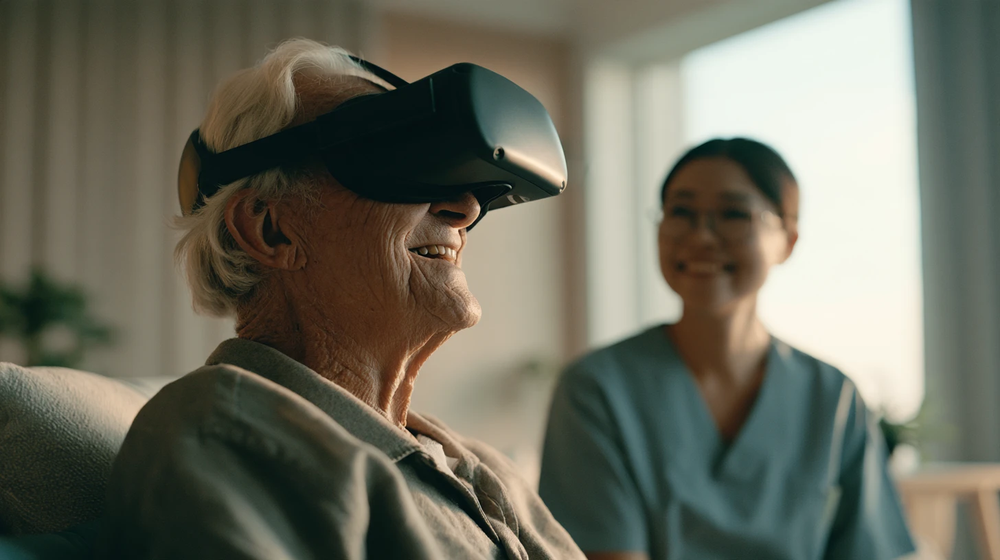
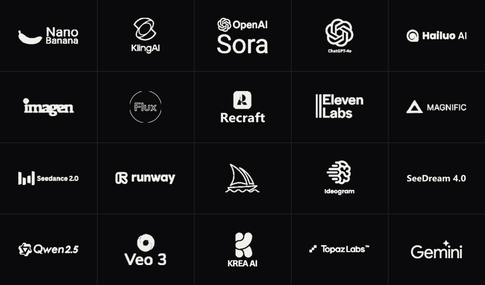
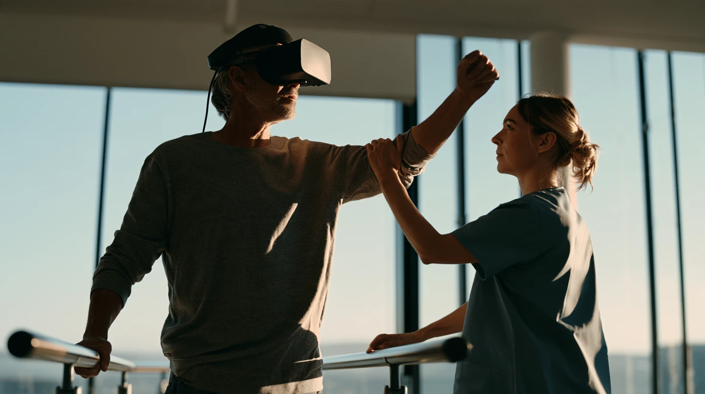

Fuse Foundry — your technology integration partner
We integrate technology.
Not products.

Most organisations don't have a technology problem. They have a connection problem: scattered tools, disjointed workflows, and adoption that never quite sticks. We bring the right creators to the table, connect the system to real operations, and stay until it becomes a working capability.
OUR APPROACHFeatured Systems
FOUR SPECIALIST SYSTEMS AND THE PROGRAMMES BUILT ON THEM. ONE INTEGRATION PARTNER.
A digital workforce.
Fuse Workspace

Fuse Creative
Fuse Studio
XR · Haptics · Digital twins
Fuse Immersion

Immersion for Care: Ready

Immersion for Care: Learn

Immersion for Care: Remember

Immersion for Care: Recover

Immersive Media Junior Class

Immersive Media Master Class
Close to the creators.
Committed to the outcome.
Fuse Foundry is an integration and adoption partner for immersive learning, content, and enabling technologies — bringing together strategy, production, technical creators, deployment, and long-term capability transfer.
Singapore-based and regionally connected, we help businesses across Asia adopt creative automation, enterprise productivity, and immersive technologies — strategically, not reactively.
- 01
Direct creator access
Faster feedback, quicker customisation, and support from people who understand the technology from the inside.
- 02
Built to ship, not to pitch
Grounded in operations and commercial production, designed to run and scale beyond a demonstration.
- 03
Built for Asia
Regional relationships and cultural context shape solutions for the realities of Asian markets.
- 04
Adoption over handover
No generic playbook. We stay until teams are confident and the system performs.
THE SERVICE LAYER — TECHNOLOGY THAT WORKS. CAPABILITY YOUR TEAM OWNS.
- A / 01
Strategy, audit & opportunity mapping
We map your workflows, identify the highest-return opportunities, define requirements, and build a practical transformation roadmap.
- A / 02
Systems integration
CRM, ERP, SSO, APIs, platforms, hardware, data, and automation connected into a coherent infrastructure.
- A / 03
Workflow automation
Manual handoffs and repetitive processes redesigned into faster, connected workflows.
- A / 04
Custom platforms & software
Dashboards, portals, workstations, mobile tools, and kiosks shaped around your operations.
- A / 05
Training & adoption
Hands-on, on-site enablement until teams use the new capability with confidence.
- A / 06
Managed growth & improvement
Post-launch support, performance reviews, optimisation, and new capability deployment as your needs evolve.
HOW INTEGRATION WORKS
FROM DISCOVERY
TO ADOPTION
- 01
Understand
Clarify the outcome, constraint, people, and operational reality behind the request.
- 02
Discover
Map current workflows, stakeholders, systems, goals, and the highest-value opportunity.
- 03
Select
Evaluate creators, platforms, and hardware for capability, fit, support, and long-term viability.
- 04
Connect
Integrate every component and configure the workflow around real teams and existing systems.
- 05
Empower
Put the capability into use with hands-on training and a supported go-live.
- 06
Support
Stay close after launch, when feedback becomes real and refinements matter most.
- 07
Improve
Measure, optimise, refresh, and extend the system as capabilities and needs evolve.
START WITH THE BUSINESS NEED
Let's work
together!
Book a complimentary discovery workshop. Tell us what you are trying to change — we will map the right solution, creator relationships, and path to adoption.